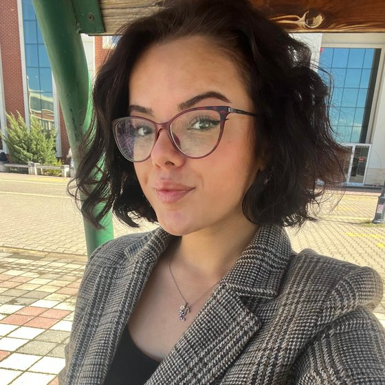

Mobile appIn progress
ARİZİ: Digital Beekeeping Platform
A Flutter-based mobile app that lets beekeepers track their hives on a map, manage beekeeping work digitally and showcase their honey products.
Management Information Systems student. I build real products with AI, data and software.

I am a student of Management Information Systems with a strong interest in technology and software development. I keep improving myself in artificial intelligence, data science and software development, and I care about turning what I learn into real projects. I work with technologies such as Python, R, SQL and JavaScript, and I carry out work on AI models and data analysis. I am open to learning new technologies, solving problems and working in teams. My goal is to bring technology and the business world together to build innovative and useful digital solutions.
IT Intern
Founder and Software Developer
Software Developer
Management Information Systems (Bachelor's)
In my coursework I built neural network and machine learning models with Python (Pandas, NumPy, Scikit-learn) and R (tidyverse, ggplot2), and ran hypothesis tests and reliability analyses in SPSS. I am especially interested in relational database design, data science and AI engineering.
From mobile apps to data analysis and security automation, the things I make while learning.
A Flutter-based mobile app that lets beekeepers track their hives on a map, manage beekeeping work digitally and showcase their honey products.
A mobile app that helps users discover new places, build travel routes and keep their travel memories in one digital place.
Work on data analysis, neural networks and deep learning models using R and Python.
Automating the processing of security alerts, the creation of incident records and AI-assisted analysis using Wazuh, n8n and DFIR-IRIS.
English · 2 pages
Get in touch for internships, collaborations or project ideas.